🔮 一文读懂Palantir本体论：从哲学概念到企业AI的底层数据基石
Palantir Ontology Explained From Philosophical Concept to Enterprise AI Data Foundation
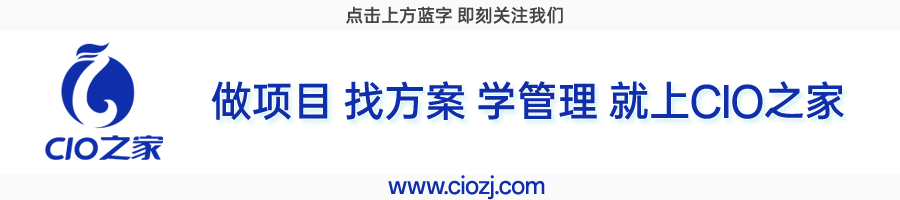
最近在企业数字化、AI工程化领域，“本体论ontology[ɒnˈtɒlədʒi] n. 本体论”成为高频热词。很多人疑惑：这本是源自哲学的古老概念concept[ˈkɒnsept] n. 概念，为何如今成为Palantir企业数据平台的核心，更是大型企业落地知识图谱、运营AI、数字化治理的关键底座？
一切问题的根源，都是数据语义混乱chaos[ˈkeɪɒs] n. 混乱。
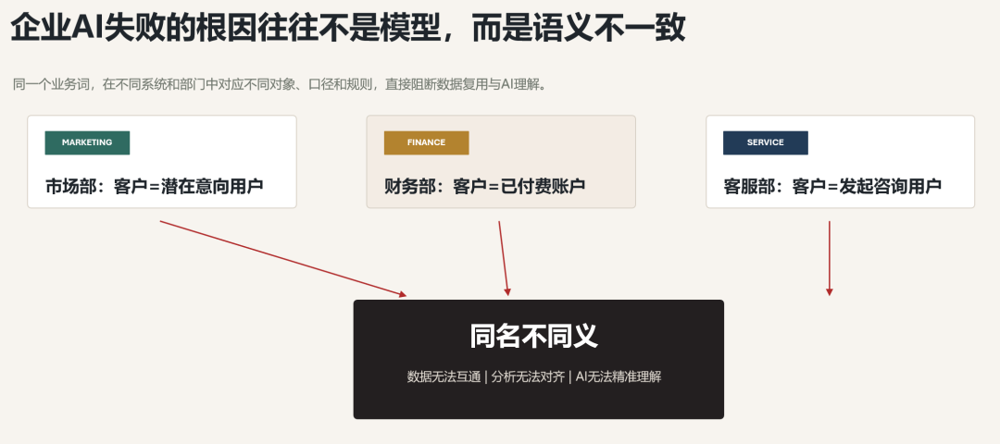
任何一家规模化企业，都会面临同一个困境dilemma[dɪˈlemə] n. 困境：市场部的“客户”是潜在意向用户，财务部的“客户”是已付费账户，客服部的“客户”是发起咨询的用户，三个部门同名不同义，数据无法互通、分析无法对齐、AI无法精准理解。
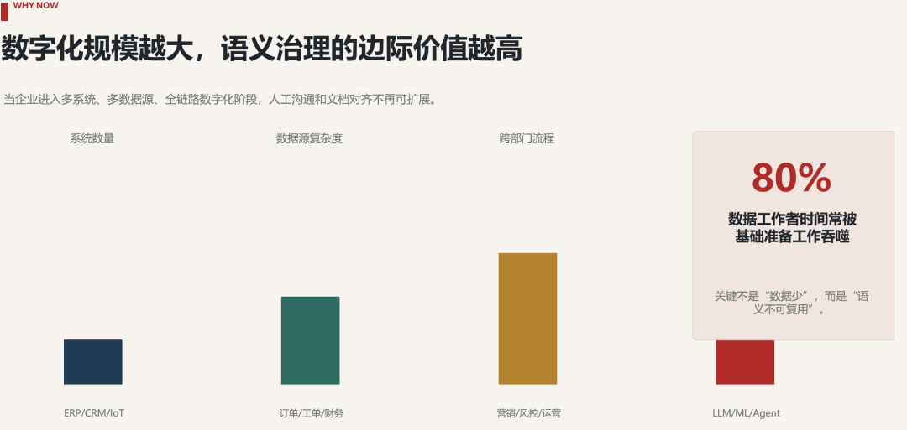
传统数据库只能存储零散数据，数据湖只能堆砌heap[hiːp] v. 堆砌原始数据，唯有本体论能为数据定义规则、统一语义、绑定业务逻辑。而Palantir提出的专属本体论，跳出了传统静态本体的局限limitation[ˌlɪmɪˈteɪʃn] n. 局限，成为可落地、可运算、可赋能业务决策的现代化数据语义体系，也是其Foundry平台支撑企业级智能决策的核心内核。
01 从哲学到数据：本体论的千年跨越本体论的本源，是哲学核心命题proposition[ˌprɒpəˈzɪʃn] n. 命题，核心探讨世界的存在本质、实体分类、属性与关联关系。早在2500年前，亚里士多德在《范畴category[ˈkætəɡəri] n. 范畴篇》中提出实体、数量、性质、关系等十大范畴，搭建了人类最早的事物分类与认知框架，这是本体论思想的雏形。
两千多年后，这一认知思想被计算机科学吸纳absorb[əbˈzɔːb] v. 吸纳改造，彻底脱离纯哲学范畴，成为数据治理的核心方法论。1993年，计算机科学家汤姆·格鲁伯给出数据领域本体论的经典定义：一种对概念化体系的明确规范specification[ˌspesɪfɪˈkeɪʃn] n. 规范。
通俗解读interpretation[ɪnˌtɜːprɪˈteɪʃn] n. 解读：本体论就是给一个行业、一家企业的核心业务概念“立规矩”——明确核心事物是什么、有什么特征、和其他事物有什么关联、需要遵守什么业务规则。
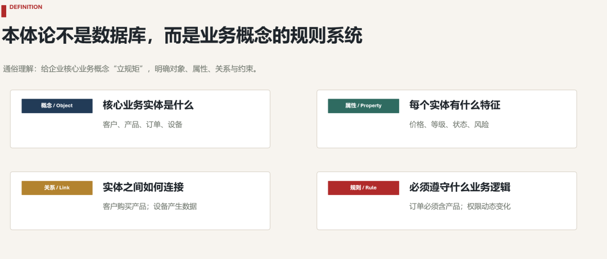
如果把数据体系比作一座仓库：数据库是存放货物的货架，数据湖是杂乱堆放的货物堆场，而本体论是整套仓库的标准化standardization[ˌstændədaɪˈzeɪʃn] n. 标准化管理体系，明确分类规则、存放逻辑、关联关系与操作规范，让零散数据变得有序、可解、可用。
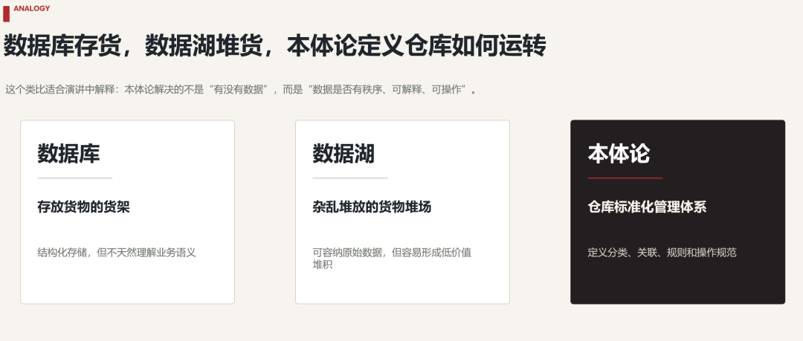
需要重点区分distinguish[dɪˈstɪŋɡwɪʃ] v. 区分：传统通用本体论 vs Palantir企业级本体论。传统本体多是静态static[ˈstætɪk] adj. 静态的术语规范，只解决“名词对齐”问题；而Palantir Ontology是动态、可运算、可决策的企业数字孪生twin[twɪn] n. 孪生体系，不仅定义概念语义，更绑定业务操作、逻辑规则、权限治理与AI运算，是真正落地业务的工程化本体框架。
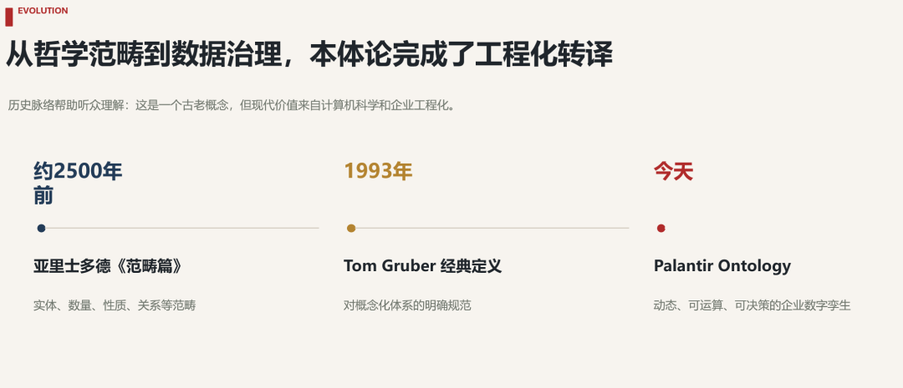
在信息化早期，企业系统少、数据量小、业务简单，工作人员靠人工沟通、文档对齐，就能规避数据语义偏差deviation[ˌdiːviˈeɪʃn] n. 偏差，本体论毫无用武之地。但数字化时代，企业早已进入多系统、多数据源、全链路pipeline[ˈpaɪplaɪn] n. 链路数字化的阶段。
一家普通电商企业，会同时拥有CRM客户管理系统、订单交易系统、客服工单系统、财务核算系统、营销投放系统，每个系统都有独立的“用户、客户、买家、付款方、受众”定义，数据标准完全割裂fracture[ˈfræktʃə] v. 割裂。
麻省理工学院斯隆管理学院2021年研究数据显示：数据工作者平均80%的工作时间消耗在数据清洗、对齐、适配等基础准备工作中，核心痛点就是跨系统语义不统一、概念无共识consensus[kənˈsensəs] n. 共识、关系无定义，导致数据无法复用、项目重复造轮子、AI模型无法精准训练与落地。
本体论的核心价值，就是破解这一行业痛点：搭建企业统一的语义底层，让所有系统、数据、人员、AI模型“说同一种语言”，从根源消除eliminate[ɪˈlɪmɪneɪt] v. 消除数据孤岛与语义偏差。
想要理解本体论的运作逻辑，我们以“小王咖啡店”为例，搭建一套轻量化业务本体，完整覆盖概念、属性、关系、规则四大核心模块module[ˈmɒdjuːl] n. 模块，这也是所有本体体系的通用基础框架。
第一步：定义define[dɪˈfaɪn] v. 定义核心概念（类/Object）
梳理organize[ˈɔːɡənaɪz] v. 梳理业务核心实体，划分标准化类别：产品（咖啡、糕点）、员工（咖啡师、收银员）、客户（会员、散客）、订单（堂食、外卖）。
第二步：明确实体属性property[ˈprɒpəti] n. 属性（字段/Property）
为每个概念定义专属特征，固化solidify[səˈlɪdɪfaɪ] v. 固化数据标准：产品包含名称、价格、成分、热量；客户包含姓名、会员等级、口味偏好preference[ˈprefrəns] n. 偏好、累计消费；订单包含下单时间、消费金额、产品清单inventory[ˈɪnvəntri] n. 清单、订单类型。
第三步：搭建关联linkage[ˈlɪŋkɪdʒ] n. 关联关系（链接/Link）
定义不同实体间的业务关联，打通unblock[ˌʌnˈblɒk] v. 打通数据链路：客户→购买→产品（生成订单）、员工→制作→产品、拿铁→属于→咖啡品类。
第四步：设定业务约束constraint[kənˈstreɪnt] n. 约束（规则/Rule）
落地业务逻辑，规范数据有效性validity[vəˈlɪdəti] n. 有效性：一个订单至少包含一款产品、会员等级根据累计消费自动升降、外卖订单默认绑定配送地址。
完成这套本体搭建后，系统可以精准理解业务问题，比如“25-30岁女性会员最喜爱的咖啡品类”，不会混淆confuse[kənˈfjuːz] v. 混淆原料与成品、不会错配用户群体，实现数据精准检索与分析。
区别于传统静态本体，Palantir本体是Foundry平台的核心底层，拥有完整的工程化IT架构，采用三层立体架构+四大核心组件，实现语义定义、业务运算、动态治理、AI赋能的全能力覆盖，也是其支撑企业大规模数字化的核心壁垒barrier[ˈbæriə] n. 壁垒。
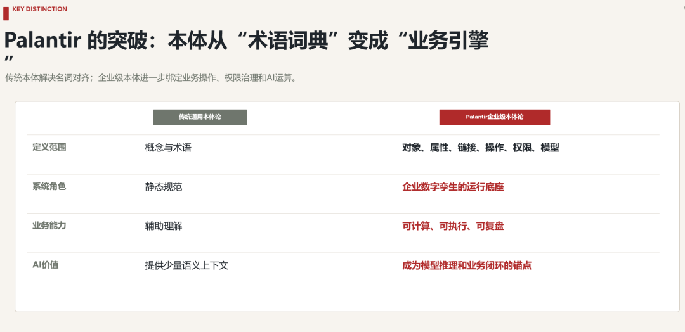
1. 语义层（基础层foundation[faʊnˈdeɪʃn] n. 基础层：定义企业“是什么”）
这是本体的底层基石cornerstone[ˈkɔːnəstəʊn] n. 基石，核心作用是统一企业所有数据的语义标准，对应传统本体的概念体系。主要包含Object对象类型、属性、链接类型、接口规范，将企业所有物理资产（工厂、设备、物料）、数字资产（订单、交易、工单）抽象abstract[ˈæbstrækt] v. 抽象为标准化实体，彻底解决同名不同义、异名同义的数据混乱问题。同时支持多态polymorphism[ˌpɒlɪˈmɔːfɪzəm] n. 多态建模，让同类实体可统一交互、差异化适配。
2. 动力dynamics[daɪˈnæmɪks] n. 动力层（运算层：定义企业“做什么”）
这是Palantir本体区别于传统本体的核心突破breakthrough[ˈbreɪkθruː] n. 突破。传统本体只做静态定义，而动力层通过操作类型、自定义函数，封装encapsulate[ɪnˈkæpsjuleɪt] v. 封装企业所有业务逻辑与运算规则。支持捕获capture[ˈkæptʃə] v. 捕获人工操作、联动系统决策、执行复杂业务计算，可实现任意复杂度的业务逻辑迭代，让本体从“静态词典”变成“可运算的业务引擎”。
3. 动态层（治理governance[ˈɡʌvənəns] n. 治理层：定义企业“怎么管”）
承载细粒度granularity[ˌɡrænjəˈlærəti] n. 细粒度安全治理、动态权限、决策捕获能力。所有数据变更、业务操作、模型推理结果都会被实时记录，形成可追溯trace[treɪs] v. 追溯、可复盘的决策链路。同时支持动态适配adapt[əˈdæpt] v. 适配业务变化，自动更新实体属性、关联关系与业务规则，实现本体的持续迭代，无需大规模重构数据体系。
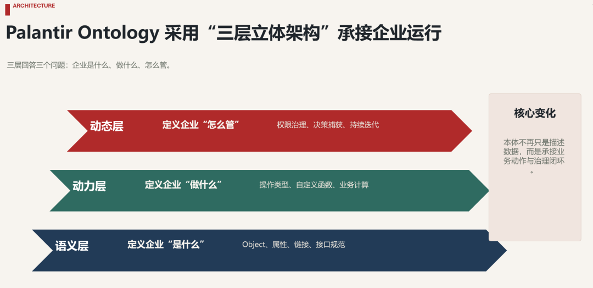
4.2 四大核心组件（IT落地核心）1. Object对象与链接体系：将ERP、CRM、IoT、财务等所有异构heterogeneous[ˌhetərəˈdʒiːniəs] adj. 异构的数据源，统一映射为标准化业务对象，通过链接打通跨系统数据关联，替代传统复杂的数据表关联与ETL适配。
2. 操作类型与自定义函数：封装审批、下单、库存调整、风险预警alert[əˈlɜːt] n. 预警等所有业务动作，支持低代码编写复杂逻辑，实现业务流程自动化、标准化。
3. 多态接口：统一同类对象的交互规范，实现不同业务场景的复用reuse[ˌriːˈjuːs] v. 复用适配，大幅降低应用开发成本。
4. AI/ML模型绑定模块：支持将训练好的机器学习模型直接映射到本体实体，模型输入输出完全对接业务语义，实现AI模型的工程化落地与闭环迭代iteration[ˌɪtəˈreɪʃn] n. 迭代。
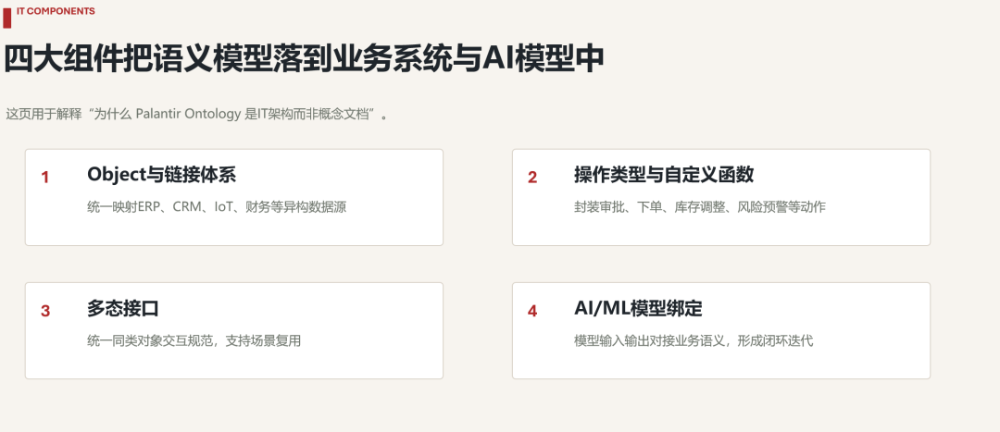
4.3 本体与传统数据架构的核心差异传统数据架构遵循“先存数据、后定规则”，而Palantir采用本体优先（Ontology-first）建模思路：先定义企业业务本体框架，再将零散数据、AI模型映射到本体体系中，从根源规避数据冗余redundancy[rɪˈdʌndənsi] n. 冗余、标准混乱、逻辑割裂问题。
05 本体论与知识图谱、AI的深度绑定关系很多人混淆本体论与知识图谱的关系，简单来说：本体论是知识图谱的骨架skeleton[ˈskelɪtn] n. 骨架，知识图谱是本体论的血肉落地，二者相辅相成，是企业知识工程的核心组合。
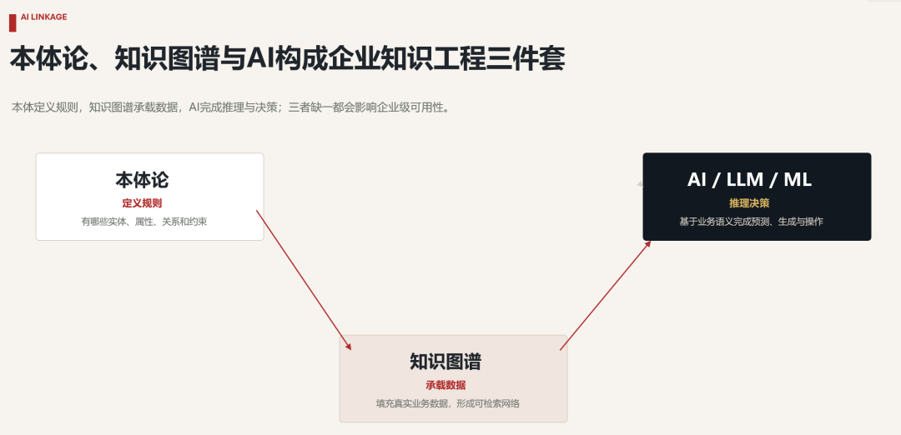
从技术逻辑来看：本体论负责定义规则，规定知识图谱中有哪些实体、实体有什么属性、实体间有什么关系、需要遵守comply[kəmˈplaɪ] v. 遵守什么约束；知识图谱负责承载数据，按照本体定义的框架，填充海量真实业务数据，形成可视化、可检索、可推理reasoning[ˈriːzənɪŋ] n. 推理的知识网络。
大模型时代，本体论的价值更加凸显prominence[ˈprɒmɪnəns] n. 凸显。深度学习先驱pioneer[ˌpaɪəˈnɪə] n. 先驱杰弗里·辛顿曾指出：“神经网络能从数据中学习模式，但它们不学习语义。”大模型擅长文本关联、概率生成，但无法理解企业专属的业务定义与逻辑规则，极易产生幻觉hallucination[həˌluːsɪˈneɪʃn] n. 幻觉、错判业务场景。
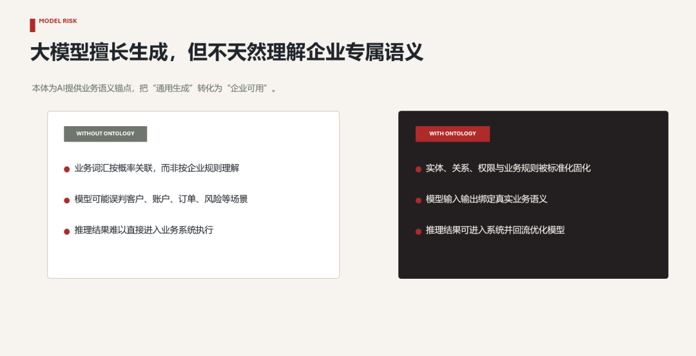
而Palantir本体为AI提供了精准的业务语义锚点anchor[ˈæŋkə] n. 锚点，将企业专属知识、业务规则、权限约束固化为标准化体系，让大模型、机器学习模型不再单纯依赖数据概率，而是基于真实业务逻辑推理、决策，实现AI从“通用生成”到“企业可用”的落地。
同时，Palantir本体实现了AI工程化闭环：模型绑定本体后，推理结果可直接作用于业务系统，业务操作产生的新数据又会回流本体，驱动模型迭代优化optimize[ˈɒptɪmaɪz] v. 优化，形成完整的MLOps闭环。
06 真实落地案例：Palantir本体在多行业的业务实战不同于传统理论化科普popularization[ˌpɒpjələraɪˈzeɪʃn] n. 科普，以下案例均为Palantir Ontology真实企业落地场景，完整覆盖知识图谱构建、IT架构适配、业务赋能全流程，直观体现本体的落地价值。
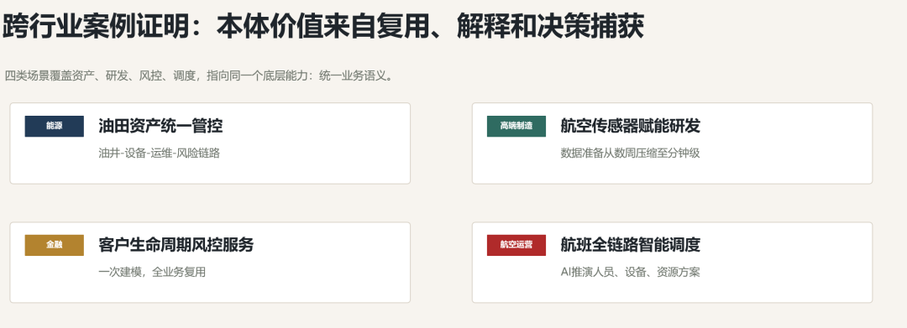
某大型能源企业原有油田数据极度分散disperse[dɪˈspɜːs] v. 分散，钻井、设备、能耗、井完整性、运维数据分属不同系统，工程师、运维人员、管理人员数据口径不统一，无法统筹评估油田健康状态与投资价值。
基于Palantir本体搭建统一能源知识图谱：定义“油井、设备、运维记录、能耗数据、故障风险”等核心对象，绑定设备参数、运行状态、运维记录等属性，搭建“油井-搭载设备-产生运维数据-存在风险隐患”的关联链路，同时嵌入embed[ɪmˈbed] v. 嵌入风险评估业务规则。
落地效果：所有岗位人员共享同一套本体数据视图view[vjuː] n. 视图，无需人工对账适配。一线工程师可实时排查inspect[ɪnˈspekt] v. 排查设备隐患，管理层可基于统一数据制定长期资产投资策略，彻底解决数据孤岛问题，实现油田资产全生命周期数字化管控。
某航空制造企业拥有海量设备传感器sensor[ˈsensə] n. 传感器数据，包含震动、温度、损耗等核心监测指标，但数据格式复杂、分散在工控系统中。以往数据准备需要数周时间，仅能支撑support[səˈpɔːt] v. 支撑少数专项项目，研发人员、质检人员无法直接使用。
企业基于Palantir本体重构数据架构：将零散的传感器数据、设备档案、质检记录映射为标准化本体对象，屏蔽shield[ʃiːld] v. 屏蔽底层数据表、数据合并、格式适配等技术细节，构建设备知识图谱。
落地效果：非技术岗位的设计师、质检专家可直接通过业务术语terminology[ˌtɜːmɪˈnɒlədʒi] n. 术语检索数据，快速定位设备异常对应的传感器指标，反向优化产品设计。原本数周的数据准备工作缩短shorten[ˈʃɔːtn] v. 缩短至分钟级，数据复用率提升80%以上，实现数据全员可用、业务可解释。
大型银行客户数据分散在储蓄、信贷、理财、风控、支付等多个系统，传统模式下无法实现客户全景画像，风控审核依赖人工，效率低、漏洞多，且无法满足监管溯源traceability[ˌtreɪsəˈbɪləti] n. 溯源要求。
银行基于Palantir搭建金融业务本体，构建客户知识图谱：定义“客户、账户、金融产品、交易记录、风控规则”等核心实体，关联客户所有金融行为数据，嵌入实名认证、风险评级rating[ˈreɪtɪŋ] n. 评级、交易风控等业务规则与操作逻辑。
落地效果：一次数据建模、全业务复用，无需为风控、营销、监管regulate[ˈreɡjuleɪt] v. 监管单独搭建数据体系，实现规模经济。系统可自动捕获每一次风控决策、营销动作，形成可追溯的决策链路，既实现了客户360°全景服务，又满足监管合规compliance[kəmˈplaɪəns] n. 合规要求，风控误判率大幅降低。
大型航空公司航班、机组、机务、排班、机场资源数据分散，航班延误、临时调整时，无法快速联动coordinate[kəʊˈɔːdɪneɪt] v. 联动人员、设备、资源调度，运营效率低下。
基于Palantir本体搭建航空运营数字孪生体系，构建航班运营知识图谱：统一建模“航班、飞机、机组人员、机务任务、机场资源、天气状态”等对象，定义各类实体的关联关系与调度dispatch[dɪˈspætʃ] v. 调度规则，绑定AI预测模型。
落地效果：AI模型可基于本体实时推演simulate[ˈsɪmjuleɪt] v. 推演航班调整后的人员排班、设备检修、资源分配方案，自动优化调度策略。所有调度决策被实时捕获、复盘review[rɪˈvjuː] v. 复盘，持续迭代优化模型，实现航班日常运营、突发应急调度的全流程智能化。
很多企业落地本体论失败，核心误区misconception[ˌmɪskənˈsepʃn] n. 误区是将其当作纯技术项目。事实上，Palantir大量落地实践practice[ˈpræktɪs] n. 实践证明：本体搭建80%的工作是跨部门业务共识，20%是技术落地。
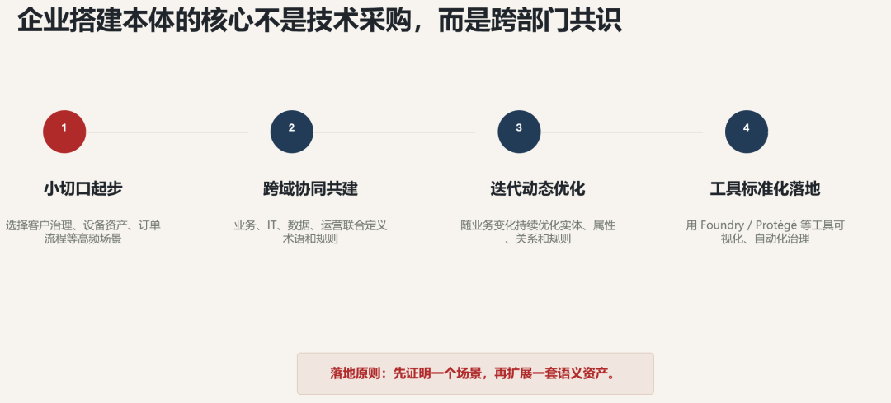
1. 小切口起步initiate[ɪˈnɪʃieɪt] v. 起步：拒绝一次性搭建全企业本体，优先选择核心高频场景，如客户数据治理、设备资产管理、订单流程管控，快速落地验证价值。
2. 跨域协同共建：组建业务、IT、数据、运营联合小组，统一各部门术语定义、业务规则、数据口径，从源头消除语义分歧divergence[daɪˈvɜːdʒəns] n. 分歧。
3. 迭代动态优化：本体不是一成不变immutable[ɪˈmjuːtəbl] adj. 一成不变的标准，而是随业务迭代的动态体系，根据业务新增、流程调整、系统升级，持续优化实体、属性、关系与规则。
4. 工具标准化落地：依托leverage[ˈlevərɪdʒ] v. 依托Palantir Foundry、Protégé等专业工具，实现本体可视化搭建、自动化映射、精细化治理，降低运维成本。08 未来趋势：本体论成为企业AI的基础设施infrastructure[ˈɪnfrəstrʌktʃə] n. 基础设施
从亚里士多德的哲学思辨speculation[ˌspekjuˈleɪʃn] n. 思辨，到如今Palantir工程化落地，本体论历经千年迭代，终于成为数字化时代的核心基础设施。随着AI深度落地、数据持续爆炸，本体论的发展呈现三大核心趋势trend[trend] n. 趋势：
1. 自动化本体构建普及：AI将自动挖掘数据实体、关联关系与业务规则，大幅降低本体搭建成本，人工仅需负责审核与标准化校准calibrate[ˈkælɪbreɪt] v. 校准。
2. 行业标准化本体成型：医疗、制造、金融、能源等领域将形成统一的行业本体标准，实现跨企业、跨系统的数据互通与协同collaboration[kəˌlæbəˈreɪʃn] n. 协同。
3. 本体+知识图谱+AI深度融合integration[ˌɪntɪˈɡreɪʃn] n. 融合：本体提供业务骨架，知识图谱承载数据知识，AI实现智能推理与决策，三者结合构建企业专属“知识大脑”，支撑全场景运营AI落地。
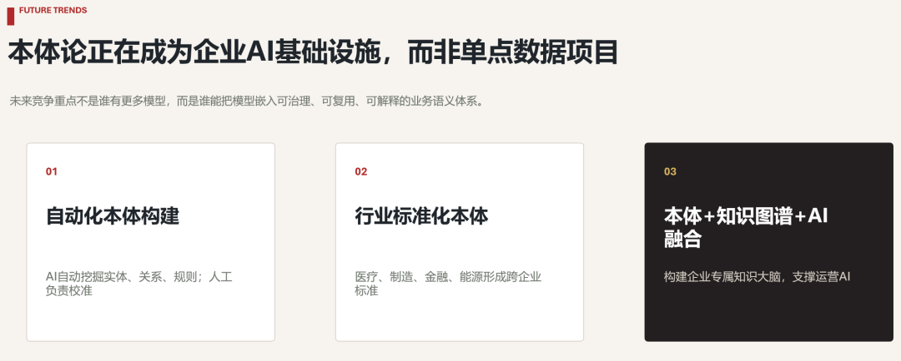
1955年，人工智能先驱约翰·麦卡锡就提出，AI的终极ultimate[ˈʌltɪmət] adj. 终极的目标是让机器具备形式化的知识理解能力。近70年后，Palantir本体论让这一愿景vision[ˈvɪʒn] n. 愿景真正落地。
在人人追捧hype[haɪp] n. 追捧大模型、生成式AI的时代，本体论是最朴素却最核心的底层支撑。它不追求炫酷的技术效果，默默为混乱的数据建立秩序，为AI赋予endow[ɪnˈdaʊ] v. 赋予真实的业务认知，为企业决策提供可靠依据。
所有智能技术的终极价值，都是让复杂的世界变得清晰clarity[ˈklærəti] n. 清晰有序。而本体论，就是企业数字化与智能化最坚实solid[ˈsɒlɪd] adj. 坚实的的基石。
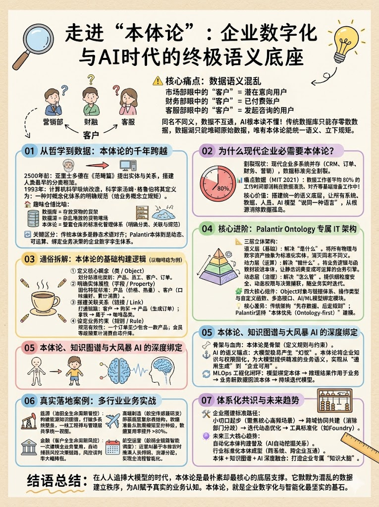
以上，既然看到这里了，如果觉得不错，随手点个赞、分享share[ʃeə] v. 分享、推荐三连吧，如果想第一时间收到推送，也可以给我们个心心～谢谢你阅读我们的文章!
回复任意关键词keyword[ˈkiːwɜːd] n. 关键词获取更多内容
AI 知识图谱 人工智能intelligence[ɪnˈtelɪdʒəns] n. 智能
Anthropic万字长文：当AI开始构建construct[kənˈstrʌkt] v. 构建自己，人类该何去何从？
为什么企业内部AI应用application[ˌæplɪˈkeɪʃn] n. 应用看起来厉害,用起来是垃圾?
从工具到体系：AI重构refactor[riːˈfæktə] v. 重构软件工程
FDE：AI时代崛起的核心技术新岗位position[pəˈzɪʃn] n. 岗位
从AI业务稳定性stability[stəˈbɪləti] n. 稳定性到 Agent 运维体系工程化实践
销售大模型的工程优化与进阶advanced[ədˈvɑːnst] adj. 进阶之路
Agent 的下一场竞争competition[ˌkɒmpəˈtɪʃn] n. 竞争:Agent Harness Engineering
Hermes Agent 常用的命令（初阶 进阶 高级 故障fault[fɔːlt] n. 故障修复）